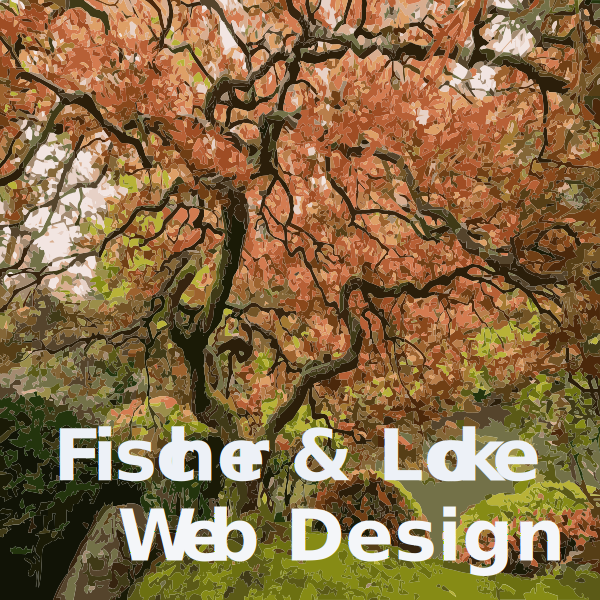
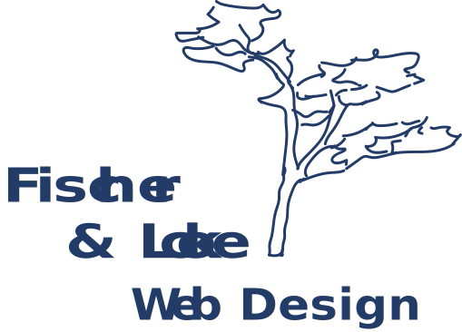

Style Guide 1.0
Purpose/Theme
Nature's color scheme for the blues of a tranquil pond surrounded by the shades of green for the lush vegetation along its edges is brought to mind when reading the title "Zen Garden Project."
The theme of an ornamental Japanese folding screen ties into the imagery conveyed in the project name while providing an opportunity for movement through CSS transitions and transforms as the site unfolds as though a Japanese screen.
Branding
- 
- 
Colors
Typography
Heading,
Aa - provides a sharp contrast to the headings sans-serif Kannada typeface for easy to read paragraphs on all screen sizes. Download.
The heading font is based upon the traditional Kannada text typeface designs, including the influential Basel Mission Press Kannada typeface, which set a strong precedent for weight, form, and proportions for succeeding type designs for Kannada. Adobe Kannada features a contrast distribution somewhat lower than the norm so as to maintain strong, legible forms at small sizes. Careful attention to shaping and details allow these typefaces to be used in a range of type sizes from small text to heading and display sizes.
HTML Elements
Styling for lists, figures, alerts, info boxes, etc can be defined here.